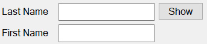

The Contact Person List contains the defined contacts for the selected filters. Contacts can be added, edited and deleted from this list.
A Contact can also be selected from this list.
The Contact List Filter controls are located to the right of the Toolbar Buttons.

The list filters determine which records will appear in the list.
The list filters are "Last Name" and "First Name". These filters are used to find the record values that start with the filter values.
Show ButtonThe Show Button retrieves the contacts that match the filter values. If the filter values are empty, then all contacts are retrieved.
The list has a toolbar above it which provides one touch access to the most common list actions.
NewThe 'New' toolbar button displays the Contact Person Detail dialog to allow for the creation of a new contact entry.
EditThe 'Edit' toolbar button displays the Contact Person Detail dialog to allow for editing the selected list item.
SelectThe 'Select' toolbar button returns the selected item from the list to the parent form.
The Context Menu can be displayed by clicking the right mouse button on the desired list item. The list item is selected and the menu items apply to the selected item or list.
If you are using a Tablet or a laptop in Tablet Mode, touch the desired list item and leave your finger on the item for a short while until a box is displayed. This shows that the touch is considered a right mouse click. Remove your finger and the context menu will be displayed.
NewThe 'New' menu item displays the Contact Person Detail dialog to allow for the creation of a new visit entry.
EditThe 'Edit' menu item displays the Contact Person Detail dialog to allow for editing the selected list item.
DeleteThe 'Delete' menu item deletes the selected list item.
RefreshThe 'Refresh' menu item reloads the list items from the database.
Export TextThe 'Export Text' menu item creates a tab delimited text file with the file name 'ExportFiles\CVPerson.doc'. It attempts to display the data with the application that is associated with the '.doc' extension.
Export CSVThe 'Export CSV' menu item creates a comma delimited text file with the file name 'ExportFiles\CVPerson.csv'. It attempts to display the data with the application that is associated with the '.csv' extension.
SelectThe 'Select' menu item returns the selected item from the list to the parent form.
CloseThe 'Close' menu item closes the window and returns to the parent window.
HelpThe 'Help' menu item displays the help page for the current list.